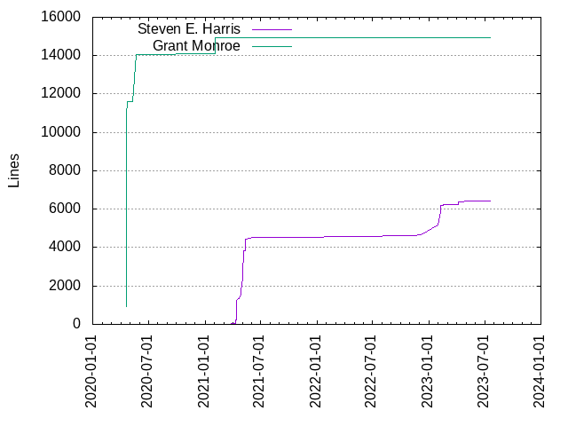
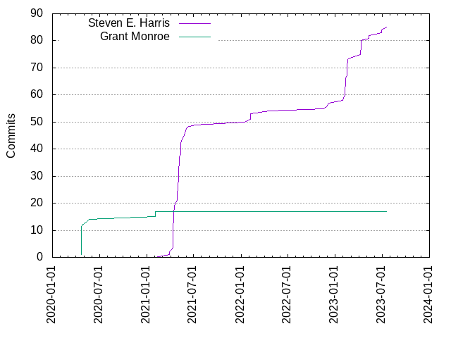

Authors
| Author | Commits (%) | + lines | - lines | First commit | Last commit | Age | Active days | # by commits |
|---|
| Steven E. Harris | 85 (83.33%) | 6430 | 5786 | 2021-03-28 | 2023-07-19 | 842 days, 21:17:48 | 48 | 1 |
| Grant Monroe | 17 (16.67%) | 14945 | 2114 | 2020-04-21 | 2021-02-03 | 288 days, 4:40:42 | 7 | 2 |


| Month | Author | Commits (%) | Next top 5 | Number of authors |
|---|
| 2023-07 | Steven E. Harris | 1 (100.00% of 1) | | 1 |
| 2023-06 | Steven E. Harris | 2 (100.00% of 2) | | 1 |
| 2023-05 | Steven E. Harris | 2 (100.00% of 2) | | 1 |
| 2023-04 | Steven E. Harris | 6 (100.00% of 6) | | 1 |
| 2023-03 | Steven E. Harris | 1 (100.00% of 1) | | 1 |
| 2023-02 | Steven E. Harris | 15 (100.00% of 15) | | 1 |
| 2023-01 | Steven E. Harris | 1 (100.00% of 1) | | 1 |
| 2022-12 | Steven E. Harris | 1 (100.00% of 1) | | 1 |
| 2022-11 | Steven E. Harris | 2 (100.00% of 2) | | 1 |
| 2022-04 | Steven E. Harris | 1 (100.00% of 1) | | 1 |
| 2022-02 | Steven E. Harris | 3 (100.00% of 3) | | 1 |
| 2022-01 | Steven E. Harris | 1 (100.00% of 1) | | 1 |
| 2021-07 | Steven E. Harris | 1 (100.00% of 1) | | 1 |
| 2021-06 | Steven E. Harris | 2 (100.00% of 2) | | 1 |
| 2021-05 | Steven E. Harris | 21 (100.00% of 21) | | 1 |
| 2021-04 | Steven E. Harris | 23 (100.00% of 23) | | 1 |
| 2021-03 | Steven E. Harris | 2 (100.00% of 2) | | 1 |
| 2021-02 | Grant Monroe | 2 (100.00% of 2) | | 1 |
| 2020-05 | Grant Monroe | 2 (100.00% of 2) | | 1 |
| 2020-04 | Grant Monroe | 13 (100.00% of 13) | | 1 |
| Year | Author | Commits (%) | Next top 5 | Number of authors |
|---|
| 2023 | Steven E. Harris | 28 (100.00% of 28) | | 1 |
| 2022 | Steven E. Harris | 8 (100.00% of 8) | | 1 |
| 2021 | Steven E. Harris | 49 (96.08% of 51) | Grant Monroe | 2 |
| 2020 | Grant Monroe | 15 (100.00% of 15) | | 1 |
| Domains | Total (%) |
|---|
| bisontrails.co | 74 (72.55%) |
|---|
| tnarg.com | 17 (16.67%) |
|---|
| panix.com | 11 (10.78%) |
|---|